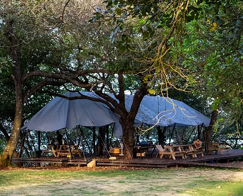
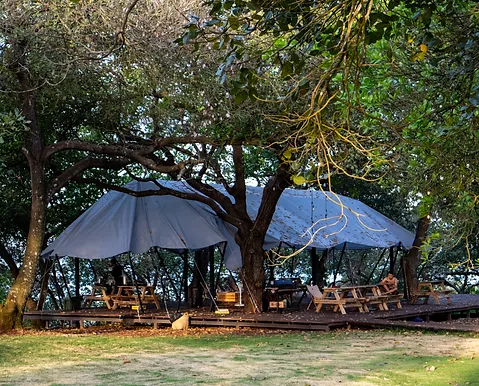

Câu chuyện Tropical eGlamping
Thiên nhiên chính là cội nguồn của tạo hoá. Khi cuộc sống hiện đại trở nên ngột ngạt, ước mơ lớn nhất bên
trong mỗi người chính là trở về với thiên nhiên, với cội nguồn, để được tận hưởng bầu không khí trong lành,
sống chậm lại và lắng nghe bình yên từ bên trong mỗi người.
Trở về với thiên nhiên, dễ mà khó. Cuộc sống bận rộn đôi khi khiến chúng ta không đủ thời gian chuẩn bị
rất nhiều vật dụng để có thể sinh hoạt giữa thiên nhiên. Trẻ em, những thị dân nơi đô thành chưa quen với
nếp sống đơn sơ thiếu thốn.
Mô hình glamping là một phiên bản cao cấp của hoạt động camping thường thấy. Tại Tropical Eglamping, khách
hàng có thể trải nghiệm hoạt động cắm trại để gần gũi với thiên nhiên nhưng vẫn đầy đủ tiện nghi như một
resort.
Tropical Eglamping ra đời với hy vọng chia sẻ khoảng thời gian bình yên đến khách hàng, kéo gần hơn những
mối quan hệ, tìm về những tâm tư tình cảm mộc mạc và chân phương nhất của con người.
Tại Tropical Eglamping, chúng tôi phục vụ khách hàng sự trong lành.
Tropical eGlamping - Windhill
Tropical eGlamping toạ lạc trên đỉnh đồi với tầm nhìn bao quát hồ Trị An và chỉ cách Sài Gòn 96km


 
